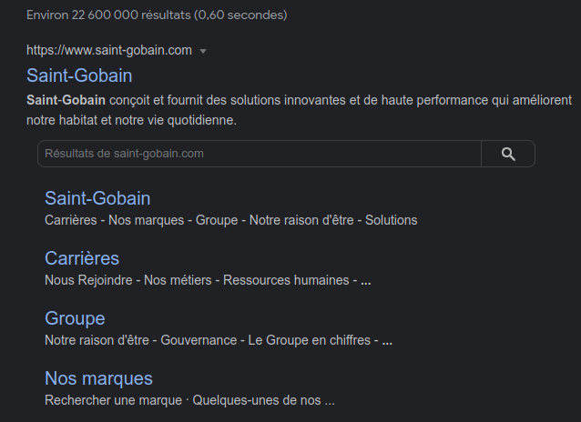

L'utilité des meta
outil de test de google pour les metatags et schemasElles sont indispensables dans le référencement
Par exemple lorsque l'on met un lien sur facebook ou autre réseau social, les éléments qui apparaissent sont des métatags
Elles sont indispensables dans le référencement
Par exemple lorsque l'on met un lien sur facebook ou autre réseau social, les éléments qui apparaissent sont des métatags
admin/config/search/metatag
A cet endroit on définit des éléments par défaut. On peut agrémenter différemment pour chaque élément du site
On peut ajouter un champ metatag pour un contenu particulier. Puis on peut aller definir ces meta en modifiant ou créant le contenu (description, titre...)
systeme qui se base sur les tokens
Editer les meta pour les contenus
admin/config/search/metatag/add
Dans cette page de configuration on peut configurer toutes les metadonnées. On peut de même utiliser les jetons pour faciliter et simplifier les informations que l'on met
[node:field_media:entity:field_media_image:facebook_meta_image:url]
Lorsque l'on ajoute des meta sur un type de contenu, sur la page de configuration on voit appraitre le type de contenu avec ce qu'il continet
C'est bien de les mettre en place pour augmenter la qualité de son site internet
Ces données structurées permettent à google de retrouver les informations à retransmettre au visiteur de son site
Ces structures de données sont dirigées par schema.org
schema.org 